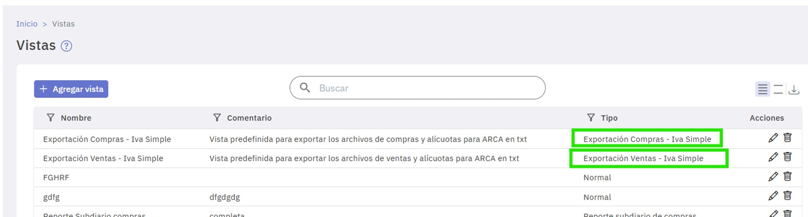
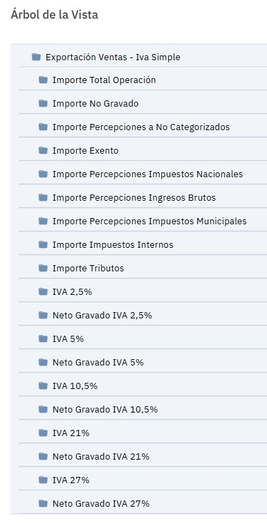
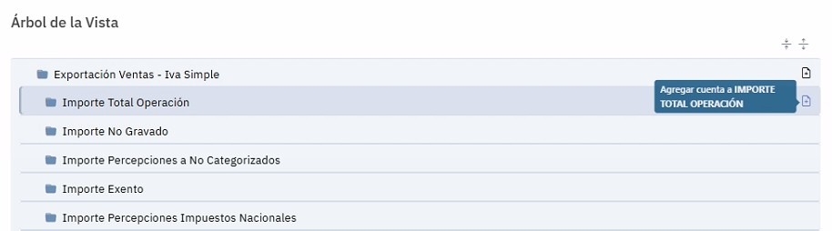
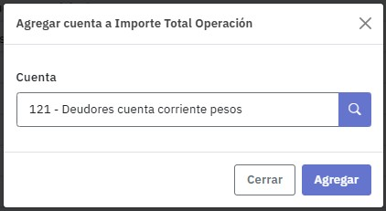
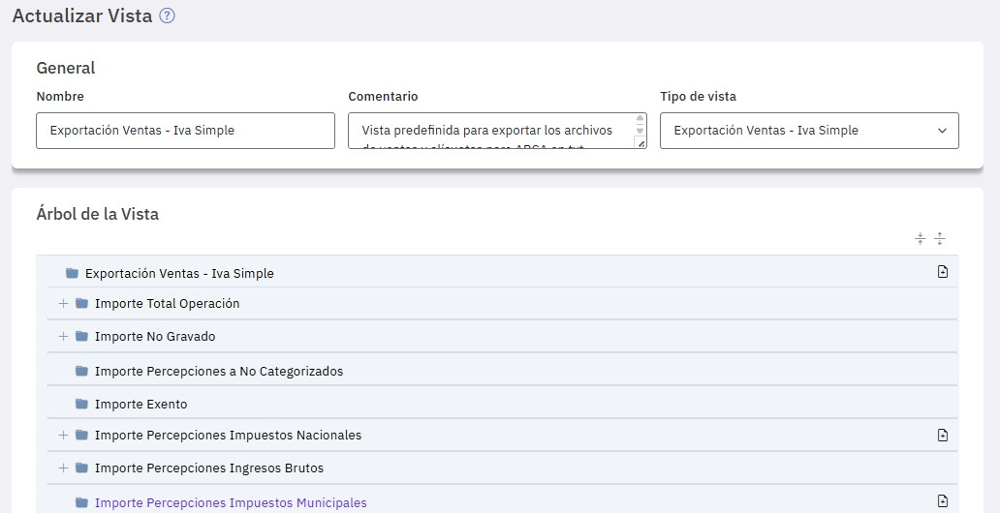
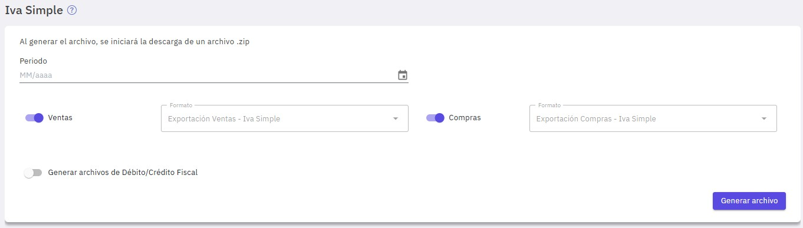

Generación de archivos de IVA Simple para ARCA
Para la generación de los archivos de IVA simple de compras, de IVA simple de ventas, de débito y de crédito fiscal, tenés que utilizar los formatos correspondientes mediante el uso de vistas. A tal fin Easysoft dispone de dos vistas predefinidas "Exportación Ventas - IVA Simple" y "Exportación Compras - IVA Simple ".
Una vez completada su definición, ya estás en condiciones de generar los archivos.

Estas vistas tienen como capítulos los campos que requieren los archivos a exportar, solamente tenés que asociar las cuentas que corresponden a cada uno de ellos.
La forma de operar para completar la definición de las vistas es similar para compras y ventas, te mostramos como hacerlo para ventas y tenes que proceder en forma análoga para las compras.
Cuando editás la vista "Exportación Ventas - IVA Simple", se despliega el árbol con los capítulos correspondientes. Solamente tenés que indicar las cuentas a asociar a cada uno de ellos que correspondan de acuerdo a tu plan de cuentas.

Easysoft controla que todas las cuentas que participan, en este caso en el subdiario de ventas, sean incluidas en el árbol, en caso contrario te informa cuales te falta incluir. Lo mismo pasa cuando definís la vista de compras. No es necesario incluir cuentas en todos los capítulos de la vista, solamente tenés que hacerlo en los que corresponden a tus comprobantes. Podés incluir más de una cuenta en cualquier capítulo.
Para completar la definición de la vista, seleccioná en "Vistas", "Exportación Ventas - IVA Simple" y presioná el icono "Agregar cuenta" en los capítulos donde tenés que incluirlas.

Informá la cuenta que corresponde al capítulo que seleccionaste.

De esta misma forma informá las cuentas que corresponden a todos los capítulos, verás el signo "+", a la izquierda, en los capítulos donde las has informado.

Una vez definidas y guardadas las vistas de compras y ventas ya estás en condiciones de exportar los archivos destinados a la importación en ARCA.
Para generar los archivos que luego se importarán en ARCA seleccioná, en el menú "Ventas y compras", "IVA Simple".

Para realizar la generación de archivos, lo primero a indicar es el período (mes y año).
Es importante tener en cuenta que, en determinado año fiscal, el primer período a exportar es el que corresponde al primer mes del mismo y no podrán exportarse periodos posteriores al que corresponde al último mes del mismo.
Podés generar los archivos en forma simultánea o en forma independiente. Para ello disponés de los botones "Ventas", "Compras" y "Generar archivos de Débito/Crédito Fiscal". Tené en cuenta que el archivo de débito y crédito fiscal sólo puede generarse conjuntamente al de compras o ventas.
El formato con el cual se generan los archivos es el que corresponde a las vistas que ya definiste y no se puede modificar, solamente se exhiben sus nombres en "Formato".
El proceso genera un archivo ".ZIP" denominado "IVA_SIMPLE_Archivos_YYYYMM" que contiene los archivos que indicaste.